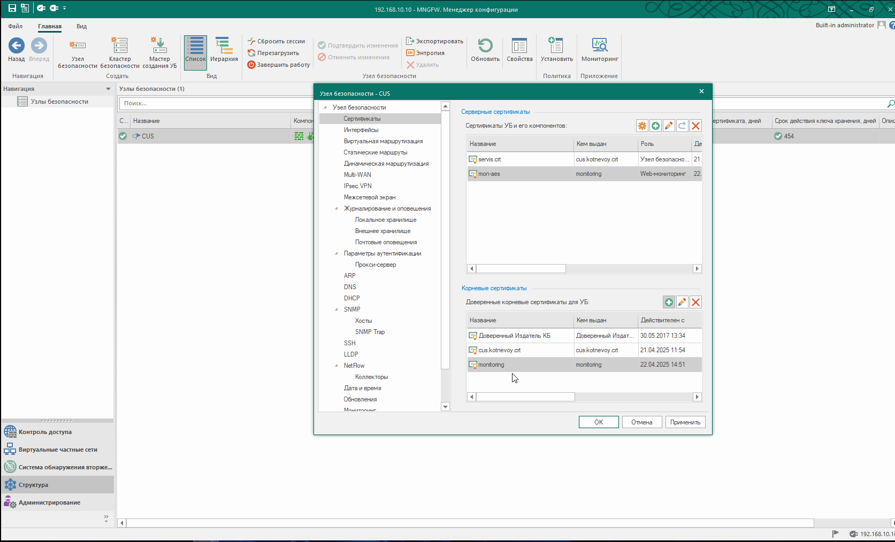

Развертывание системы МОНИТОРИНГА
Развертывание системы МОНИТОРИНГА
1. Создание корневого сертификата
Администрирование/Сертификаты/Корневые центры сертификации
В левом верхнем углу нажимаем "Корневой сертификат", заполняем пустые поля, алгоритм подписи должен быть RSA(2048), нажимаем Создать сетрификат

созданный корневой сертификат экспортируем на ПК, в нашем примере на рабочий стол, нажимаем далее

указываем путь, нажимаем Готово, ОК

на рабочем столе появился созданный корневой сертификат, его надо установить в хранилище доверенных корневых сертификатов и центров сертификации

устанавливаем
переводим в локальный компьютер и нажимаем далее
помещаем в указанное хранилище
обязательно надо поставить галочку

выбираем хранилище
раскрываем "Доверительные отношения в предприятии" и переходим в "Реестр" и нажимаем OK

по итогу
2. Создание персонального сертификата
Администрирование/Сертификаты/персональные сертификаты
в левом верхнем углу нажимаем на "сертификат" в тип сертификата выбираем "Web-мониторинг" (обратите внимание, что созданный ранее корневой сертификат автоматически подставляется)
обратите внимание, корневой сертификат созданный ранне подставляется автоматически. "Создать сетрифиат"

сертификат создается на 1 год
3. Привызываем сертификаты мониторинга к ЦУС
Структура. двойным нажатием клавишой мыши открываем ЦУС.

В открывшемся окошке заходим в раздел Сертификаты.
В разделе серверные сертификаты нажимаем на + и выбираем ранее созданный персональный сертификат mon-aes. В разделе Корневые сертификаты, выбираем корневой сертификат monitoring 
Далее сохраняем конфигурацию и применяем политику на ЦУС. (все введенные изменения обязательно надо сохранять и применять политику)

Далее. Структура. В верхнем правом углу нажимаем на "Мониторинг" (перед этим, закройте МК и перелогинитесь заново. Желательно по умолчанию иметь Google, Yandex, Mozila браузеры)

в открывшемся окне, браузер не доверяет сертификату и поэтому вам придется довериться для дальнейшего продолжения работы на этом сайте. авторизуемся под встроенным admin ЦУС
Система мониторинга комплекса MilliSec NGFW, представляет собой ПО позволяющее проводить мониторинг различных параметров узлов безопасности, входящиз в состав комплекса

Интерфейс системы мониторинга выглядит следующим образом: Раздел «Панель мониторинга»: включает в себя набор настраиваемых виджетов для отображения информации о состоянии объектов;
Раздел «Журналы»: просмотр журналов системы;
Раздел «Статистика: формирование и просмотр настраиваемых отчётов;
Раздел «Структура»: включает в себя настройку шаблонов групп, просмотр событий, сведений о состоянии компонентов узлов безопасности;
Раздел «Настройки»: настройка сервера исходящих почтовых сообщений В верхней панели присутствует «Счетчик событий»: системные события, события сетевой безопасности и события управления (красный — события высокой важности; оранжевый — события средней важности; зеленый — события низкой важности). Структура Раздел предназначен для просмотра сведений о состоянии объектов мониторинга и настройки шаблонов.
В разделе отображаются реальные сведения о функционировании устройств.
Есть следующие группы:
ЦП и память: информация о ЦП и оперативной памяти устройства;
Подсистемы: информация об активированных компонентах устройства;
Жесткие диски: сведения о жестких дисках и состоянии их разделов;
Сетевые интерфейсы: информация о статусе и состоянии интерфейсов;
Активные сетевые и VPN соединения